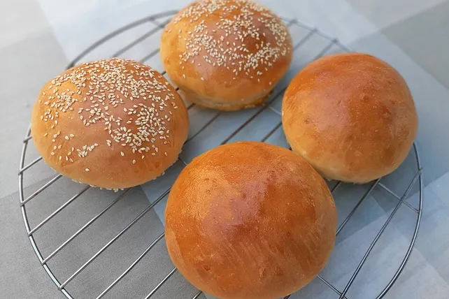

Burger Bun

Description
Ingredients
- 300 ml Milk
- 2 Eggs
- 45g Butter
- 1El Sugar
- 21g Yeast
- 500g Flour
- Sesame seeds
Steps
- Mix milk, sugar, yeast and butter and let it rest for a little.
- Mix flour with a pinch of salt and add the yeast mixture as well as one egg.
- Kneed the dough.
- Let it rest for 60 minutes.
- Divide the dough into 8 pieces and form out the buns.
- Let it rest for another 45 minutes.
- Mix the other egg with a little milk and cover the buns.
- Bake it in the oven at 190 degrees celsius for 20 minutes till golden brown.